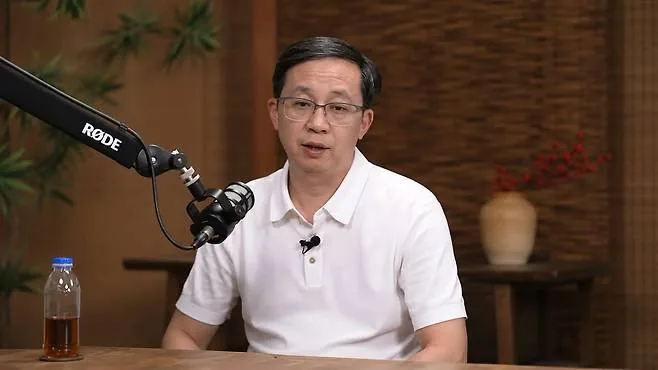

Voices
Liao Heng Interview
FIELD NOTES
Published · Bilibili

Liao Heng (廖恒) is Huawei’s chief semiconductor scientist and a semiconductor and systems design researcher with firsthand experience developing Ascend AI chips. This page presents the full English translation of the transcript of a 4-hour, 38-minute interview, translated from the reviewed Korean edition. Drawing on his career, he discusses the semiconductor industry, design after Moore’s Law, China’s supply chains, AI systems, and the role of engineers.
- Runtime
- 4:37:51
- Structure
- 07 CHAPTERS
- English-translated transcript
- 8,142 SEGMENTS
CARROT CAVE INSIGHTS
- As Moore’s Law loses momentum, performance comes not from process technology but from the ability to co-design chips, memory, networks, compilers, and models.
- Supply-chain constraints can be more than a cost: they can force organizations to relearn the underlying technologies that an external division of labor had kept out of view.
- In an inference-driven market, metrics that determine the economics of the service as a whole—such as memory bandwidth, communication latency, and token throughput—matter more than peak FLOPS.
- Open source is not a declaration of goodwill but an industrial mechanism that brings real-world feedback into the design process and broadens the perspective of closed organizations.
- Chip talent develops through repeated tape-outs and accountability for failure rather than lectures, so long-term competitiveness accumulates through an organization’s experience of seeing projects through to completion.
Interview Details, Sources, and Methodology
- Original title: 对华为半导体首席科学家廖恒的5小时访谈：一部昇腾史、18层宝塔与全球芯片恢弘30年史诗
- Interviewee: Liao Heng, Huawei’s chief semiconductor scientist (华为半导体首席科学家 廖恒)
- Interviewer: Zhang Xiaojun (张小珺)
- Original: Bilibili BV1nB3u6tERu, B站 × WAIC AI会客厅
- Actual duration: Approximately 4:37:51, based on the official audio. The “5 hours” in the video title is rounded.
- Preparation method: All 8,142 segments of the Chinese ASR transcript, generated using a local copy of the official audio and organized around the 7 chapters in the official video description, are provided here in English, translated from the reviewed Korean edition. The existing 35 topics and timestamps have been retained as key navigation points within the transcript, not as summaries that replace the original.
- Source priority: Official video, audio, and contents → context from the local ASR transcript → publicly available transcript images and secondary summaries. No new internet searches or facts outside the supplied documents were added.
- Quotation policy: The full text is an English translation made from the reviewed Korean edition of a Chinese automatic speech recognition transcript. It is not an official verbatim transcript or an authorized translation. Before quoting it directly in a publication or news report, you must listen again to the official audio at the relevant timestamp.
Full English-translated transcript
Loading all 8,142 transcript segments…
The History of Chips: Computing, Connectivity, and the Long Sunset of Platform Monopolies
00:02:08
This chapter traces how the twin pillars of computing and connectivity grew the semiconductor industry. It also examines how platform monopolies, customer concentration, and the fabless–foundry division of labor have constrained or expanded chip companies’ innovation and judgment.
After Moore’s Law: From Process Nodes to Time and Energy
01:17:32
The diagnosis is that the era in which Moore’s Law improved cost, performance, and energy efficiency together is coming to an end. Liao argues that we must return to time and energy as our objective functions, rather than process feature sizes, and seek new answers in architecture, interconnects, and system-level design.
The 18-Story Pagoda: Co-Design Across Every Layer, from Materials to AI Applications
01:31:45
This chapter treats the “18-story pagoda”—extending from materials and equipment to chips, compilers, models, and applications—as a single system. Liao explains how problem decomposition and co-design can address resource constraints, and why this requires deep specialists, translators between layers, and leadership that poses the right problems.
The History of Huawei Ascend: Supply Chains After Sanctions and China’s Path
01:58:18
From a Huawei insider’s perspective, Liao looks back on the journey from Ascend 910 to 950 and the supply-chain learning that followed sanctions. He argues that models, compilers, memory, optical links, supernodes, and the developer ecosystem must be optimized together, and that China’s path must rest on an economically self-sustaining industrial structure.
Talent and Computing Power: Repeated Tape-Outs and Systems Thinking
03:21:29
The argument is that chip talent develops through repeated tape-outs and long feedback cycles rather than lectures. Liao emphasizes organizations capable of long-term patience and technical debate free of hierarchy, as well as a view of computing power based on complete systems rather than accelerator counts.
The Frontiers of AI and Chip Technology: Open Source, Physical AI, and Optical Design
03:39:23
Liao sees rapid technological change, talent mobility, and open source as forces that slow the formation of AI monopolies. Across frontiers ranging from digital AGI and physical AI to the next platform for personal context and optical design, he says both technological imagination and the ability to persuade an organization are essential.
An Engineer’s Story: Open Collaboration and the Possibilities of AI Coding
04:16:45
This chapter explores an engineer’s view that innovation hubs arise from real needs and open competition rather than enthusiasm alone. Examples of recommendation letters and collaboration illustrate the collective nature of engineering, and the interview closes with the possibility that AI coding could expand the scope of work available to self-directed engineers.
Core Ideas Running Through the Interview
- Defining the problem correctly comes before finding the answer. If you simply accept the incumbents’ metrics and answers, you miss solutions suited to your own constraints.
- Co-design across every layer matters more than local optimization. Chips, memory, networks, compilers, models, power, and cooling compensate for one another’s weaknesses to deliver overall throughput.
- Constraints force you to look at the layers below. Drawing on his own experience, Liao Heng argues that supply chain disruptions forced Huawei to learn about the equipment, processes, and components that the global division of labor had kept out of view.
- Technical feasibility and industrial sustainability are different things. What is needed is not prototypes or benchmarks, but a closed loop of reliable mass production, customer value, profits, and reinvestment.
- Talent develops through long feedback cycles and crossing disciplinary boundaries. Both the depth gained through repeated tape-outs and the breadth needed to translate between different layers are essential.
- AI competition is shifting from individual chips to systems and ecosystems. HBM, optical interconnects, megakernels, open source, and a critical mass of developers matter as much as peak compute performance.
- Optimism about China is distinguished from zero-sum nationalism. The interview concludes with an insider’s bet on the long-term potential of Chinese industry; it does not present other countries’ decline as either a fact or a goal.
Key People, Companies, and Technical Terms
- Liao Heng (廖恒): Huawei’s chief semiconductor scientist. He emphasizes his role in bridging software, algorithms, chips, and systems.
- Zhang Xiaojun (张小珺): The interviewer.
- Huawei (华为) · HiSilicon (海思): The organizational context behind Liao Heng’s experiences and arguments.
- Ascend (昇腾): Huawei’s family of AI processors and systems. The 910 series and 950 are the main examples discussed.
- DeepSeek(深度求索), Qwen(通义千问), LLaMA: An example of publicly available models and real-world workloads serving as inputs to chip design.
- NVIDIA (英伟达), CUDA, NVL72, Blackwell: Points of comparison. Keep in mind that the interview’s assessments reflect Huawei’s perspective as a competitor.
- 18-Story Pagoda (十八层宝塔): A metaphor for co-designing every layer of the industry, from materials, equipment, and processes to applications.
- CANN: The software stack encompassing Ascend’s compilers, runtimes, libraries, and more.
- Lingqu (灵衢): Huawei’s proposed high-speed interconnect architecture.
- HBM, KV cache, prefill, decode: Key terms for explaining compute and memory bottlenecks in large-model training and inference.
- SIMD · SIMT, Vector · Cube, Megakernels: Architectural concepts concerning computational granularity, resource configuration, and operator fusion.
- 2.5D, Stacking (堆叠), NPO: Paths to scaling through packaging and optical interconnects, rather than leading-edge process nodes alone.
- Tape-out (流片): The stage at which a chip design is finalized as manufacturing data. Repeated experience with this process is presented as central to developing talent.
- Economically Sustainable Closed Loop (经济上可循环 / 正向闭环): A state in which a supply chain continually generates profits and reinvestment.
Reading Notes and Caveats
- Perspective: This interview presents a Huawei chief scientist’s interpretation of his experience inside China’s semiconductor industry. Read it with the understanding that it reflects an insider’s perspective favorable to Huawei’s and China’s capabilities and strategies.
- ASR and Translation Limitations: No public subtitles were available on Bilibili. The detailed timings and content come from a Chinese ASR transcript of the official audio, translated into Korean and then into English from the reviewed Korean edition. Proper names, numbers, and English abbreviations may contain recognition or translation errors.
- Timestamps: The starting points of the 7 chapters were confirmed in the official description. Links to specific topics use topic transitions in the ASR transcript and may be off by a few seconds to several dozen seconds.
- Figures: Figures such as tape-out counts, board counts, power consumption, card counts, market sizes, and Vector–Cube ratios may reflect the speaker’s recollections, analogies, or rough estimates. It is safer not to cite them as independently established statistics.
- Comparative Claims: Assessments of NVIDIA, TSMC, and the capabilities and trajectories of the United States and China are the interviewee’s analysis. They have not been established through independent benchmarks or third-party verification.
- Direct Quotations: The full text is an English translation of the reviewed Korean edition, which was translated from Chinese automatic speech recognition output. It is neither an official verbatim transcript nor an authorized translation. Before using verbatim quotations in publications or reporting, listen again to the official audio at the relevant timestamp.
- Secondary Sources: Fengwen user posts, Book118 previews, and industry media articles are not the official full text. A permanent URL for the official WeChat text edition and a complete set of official subtitles could not be obtained.
Original Source and Reference Links
- Official Bilibili Video
- Bilibili Metadata API
- Guancha.cn · Fengwen User-Posted Summary / Transcript Images
- Book118 Listing and Preview: 29,000-Character Edited Transcript PDF
- EET-China Adapted Article
- EET-China News Version
- Sina Finance Reprint
- Possible Transcript on Zhihu Under the Same Title — Unverified: the article returned a 403 error at the time of research